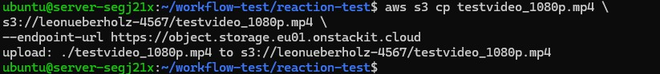
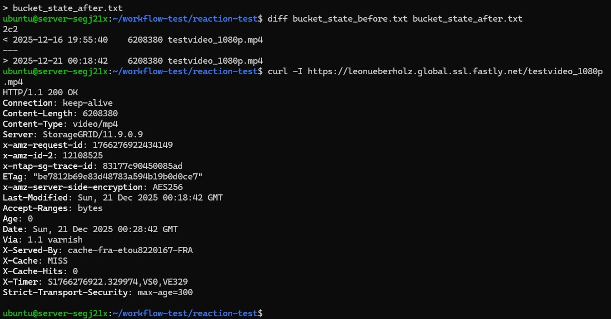

Automatische Reaktion auf neue Inhalte
In diesem abschließenden Versuch soll gezeigt werden, wie ein einfacher automatisierter Workflow ohne Cloud Functions umgesetzt werden kann.
Dazu wird regelmäßig geprüft, ob sich Inhalte im Object Storage geändert haben. Wird eine Änderung erkannt, wird automatisch eine Überprüfung der CDN-Auslieferung durchgeführt.
Dieses Vorgehen ist typisch für einfache produktive Medienworkflows und wird häufig in Kombination mit Cronjobs oder Monitoring-Skripten eingesetzt.
Architekturidee
Beispiel-Workflow
- Aktuellen Zustand des Object Storage erfassen
- Änderung im Object Storage erzeugen
- Object Storage erneut prüfen
- Änderung erkennen
- Reaktion ausführen
- CDN-Auslieferung kontrollieren
- Ergebnis dokumentieren
Status der Bearbeitung überprüfen
Der Status der Ausführung der Lambda-Funktionen kann über den AWS-Service CloudWatch verfolgt werden. Dort sind auch mögliche Fehlermeldungen sichtbar. Über die Suchleiste den Service Cloudwatch auswählen. Unter "Protokolle" "Protokollgruppen" aufrufen. In der Übersicht sehen Sie Ihre Lambda-Funktionen. Durch Klick auf die jeweilige Funktion können Sie den Status der letzten Aufrufe abrufen.
Schritt 1: Arbeitsverzeichnis vorbereiten
Melden Sie sich auf der VM an und erstellen Sie ein neues Verzeichnis für den Versuch:
Auf der VM anmelden:
ssh ubuntu@<DeineIPvomServer>
Directory erstellen:
mkdir reaction-test
cd reaction-test
Das schaut dann so aus:
Laden Sie nun auch hier wieder einer der 3 transcodierten Files aus dem Bucket herunter mit folgendem Command:
s3cmd get s3://<DeinBucketname>/testvideo_1080p.mp4 testvideo_1080p.mp4
Schritt 2: Aktuellen Zustand des Object Storage erfassen
Gebe nun folgenden Befehl ein:
s3cmd ls s3://leonueberholz-4567 > bucket_state_before.txt
<!!! question "Frage 3.3" Betrachten Sie folgenden Befehl:
<pre><code>
s3cmd ls s3://leonueberholz-4567 > bucket_state_before.txt
</code></pre>
Beschreiben Sie in eigenen Worten:
<ul>
<li>Was der Befehl genau bewirkt</li>
<li>Warum die Ausgabe in eine Datei umgeleitet wird</li>
</ul>
Schritt 3: Datei im Object Storage ändern (Ingest simulieren)
Jetzt rufen wir mit folgendme Befehl eine Änderung im Bucket hervor:
s3cmd put testvideo_1080p.mp4 s3://<DeinBucketname>/testvideo_1080p.mp4
Das sollte so aussehen:

Schritt 4: Neuen zustand erfassen
Jetzt speichern wir den Zustand nach der Änderung.
s3cmd ls s3://<DeinBucketname> > bucket_state_after.txt
und vergleichen den Vorher Nachher Zustand
diff bucket_state_before.txt bucket_state_after.txt
Was ist nun zu sehen? Dokumentiere SIe ihre Beobachtung.
Schritt 5: Reaktionsauslösung
Jetzt prüfen wir automatisch, ob die geänderte Datei korrekt über Fastly ausgeliefert wird.
curl -I https://<DeineDomain>.global.ssl.fastly.net/testvideo_1080p.mp4
Die Ausgabe zeigt uns an:

Ein weiteres mal der gleiche Abruf:
curl -I https://<DeineDomain>.global.ssl.fastly.net/testvideo_1080p.mp4
Was ist hier gerade passiert?
Was ist hier gerade passiert? (Einordnung)
In diesem Experiment wurde kein klassischer Event-Trigger, keine Cloud Function und kein serverseitiger Automatisierungsdienst eingesetzt. Trotzdem hat das Gesamtsystem korrekt auf eine Änderung reagiert.
1️. Änderung im Object Storage
Zunächst wurde der Zustand des STACKIT Object Storage verändert:
Eine Datei wurde neu hochgeladen oder
eine bestehende Datei wurde ersetzt
Der Object Storage fungiert dabei als Single Source of Truth: Er enthält immer die aktuell gültige Version der Mediendateien.
Wichtig:
Der Object Storage informiert niemanden aktiv über diese Änderung.
2️. Erkennung der Änderung (State Comparison)
Die Änderung wurde nicht durch ein Ereignis erkannt, sondern durch Zustandsvergleich:
Ein vorher gespeicherter Zustand (z. B. Dateiliste)
wird mit einem aktuellen Zustand verglichen
Unterschiede (neue / geänderte Dateien) werden sichtbar
Dieses Prinzip ist extrem verbreitet:
-Cronjobs
-Monitoring-Systeme
-Medien-QA-Pipelines
-Backup- und Sync-Tools
Das System reagiert nicht auf Events, sondern auf Unterschiede.
3️. Abruf über das CDN
Nach der erkannten Änderung wird die Datei erneut über das CDN abgerufen:
Client fragt Fastly nach der Datei
Fastly prüft:
Ist die Datei im Cache vorhanden?
Ist sie gültig?
Da sich der Origin-Inhalt geändert hat, muss Fastly:
die Datei neu vom Origin abrufen
die neue Version an den Client ausliefern
4️. Automatisches Caching im CDN
Sobald Fastly die neue Datei vom Object Storage abgerufen hat:
wird sie automatisch auf dem Edge-Server gespeichert
zukünftige Anfragen werden aus dem Cache bedient
Wichtig:
Das Caching ist keine explizite Aktion, sondern eine Folge der Auslieferung.
5️. Warum das eine „automatische Reaktion“ ist
Auch ohne Lambda, Webhooks oder Trigger hat das System korrekt reagiert, weil:
der Origin den neuen Zustand bereitstellt
das CDN konsistent auf Anfragen reagiert
der Cache sich selbst aktualisiert, sobald neue Inhalte angefragt werden
Frage 3.4: Automatische Reaktion im CDN-Workflow
In diesem Versuch wurde bewusst keine Cloud Function,
kein Event-Trigger und kein serverseitiger Automatisierungsdienst
(z. B. AWS Lambda) eingesetzt.
Trotzdem konnte beobachtet werden, dass das System korrekt auf eine Änderung im STACKIT Object Storage reagiert hat und die neue Datei über das Fastly CDN ausgeliefert wurde.
Beschreiben Sie in eigenen Worten:
- was sich konkret im Object Storage geändert hat,
- wie diese Änderung vom CDN technisch „bemerkt“ wird,
- warum kein explizites Ereignis oder Trigger notwendig war.
Gehen Sie dabei insbesondere auf folgende Punkte ein:
- die Rolle des HTTP-Requests vom Client,
- die Funktion des Origin-Servers im CDN-Kontext,
- das Zusammenspiel von Cache, Cache-Miss und erneuter Speicherung.
Frage 3.5
Bewerten Sie, warum dieses einfache Reaktionsmodell in der Praxis für viele Video-on-Demand-Workflows ausreichend ist und in welchen Fällen eine explizite Automatisierung (z.B. mit Triggern) dennoch sinnvoll wäre.